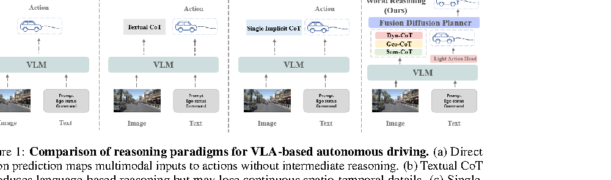
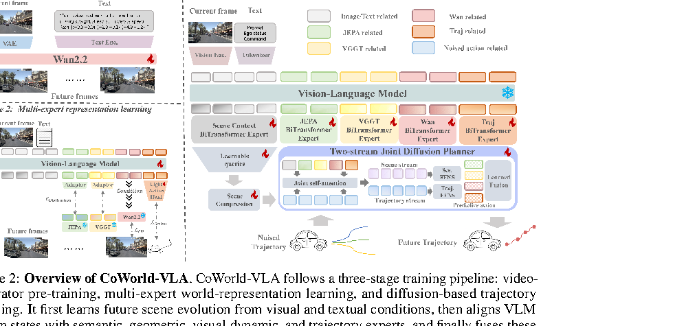
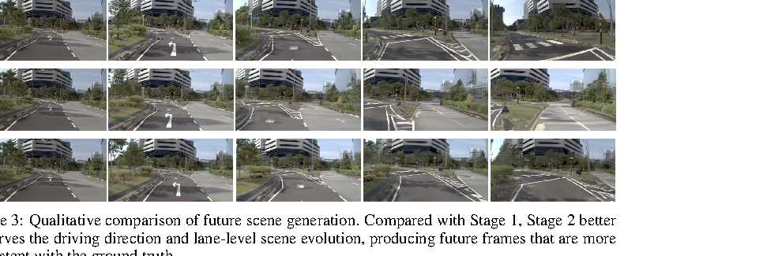
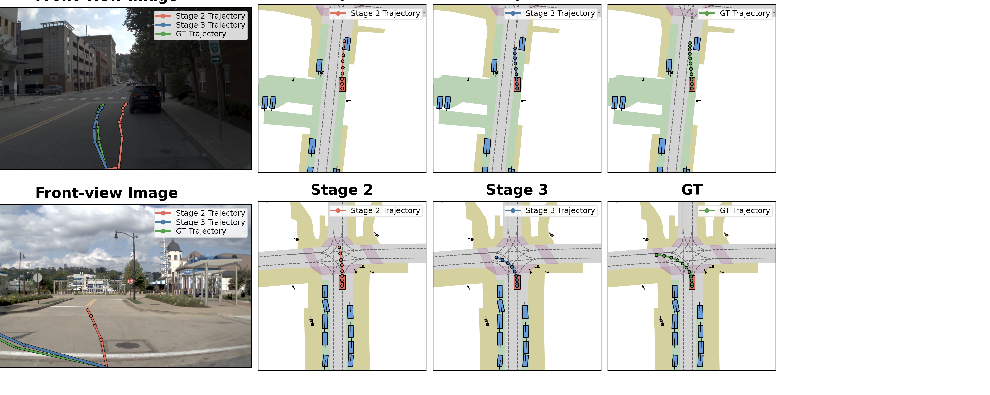

一句话总结
CoWorld-VLA 不满足于一个整体 future latent，而是把世界知识拆成语义交互、几何结构、 动态演化和轨迹先验四类 expert tokens，并让这些 planning-accessible latent states 直接条件化 diffusion trajectory planner。
论文要解决的问题
论文认为 VLA 自动驾驶的关键瓶颈不是“没有推理”，而是缺少一种既保留连续时空结构、 又能直接进入 planner 的中间推理状态。文本 CoT 虽然可解释，但容易丢失几何、速度和动态关系； 单一 latent world representation 又可能不完整，并且常常只作为辅助监督存在。
- Direct action prediction：直接从图像和指令输出 action，中间没有可控 reasoning state。
- Textual CoT：自然语言推理会增加延迟，也难以表达连续空间和运动轨迹。
- Single-world latent：单一隐式世界表征难以同时覆盖语义、几何、动态和行为目标。
- World-to-action gap：很多 world model 的未来知识没有在推理时显式影响轨迹生成。

创新点怎么理解
Multi-Expert Latent CoT
把中间推理状态拆成 H_sem、H_geo、H_dyn、H_traj
四类 expert token，而不是让一个 latent 同时承担所有世界知识。
多源专家监督
分别用 V-JEPA、VGGT、Wan video world model 和 trajectory regression 监督四类 token， 让 VLM hidden states 被塑造成语义、几何、动态和规划目标的结构化表示。
Planner-accessible world states
这些 expert tokens 不只是训练时辅助 loss，而是在 Stage 3 作为 HMEF planner 的条件， 直接参与 denoising trajectory generation。
Hierarchical Multi-Expert Fusion
HMEF 为每类 expert 生成轨迹分支，并学习融合权重，把世界知识转化成连续 ego trajectory。 论文报告 dynamic 和 trajectory expert 收敛后权重最高。
这篇论文已经很接近“预设多种 planning-relevant factors + 学习融合权重”。 不同之处在于：它用连续 expert tokens，而不是 factor codebook；融合权重更像全局 learned weights， 还不是强场景自适应 gate。
方法总览

Stage 1:
historical frames + ego intention -> Wan latent world model -> future latent dynamics
Stage 2:
current image + prompt + expert tokens -> Qwen3-VL hidden states
H_sem aligns V-JEPA future semantics
H_geo aligns VGGT future geometry
H_dyn conditions Wan future generation
H_traj regresses future trajectory
Stage 3:
scene tokens + four expert tokens -> HMEF diffusion planner -> continuous ego trajectoryStage 1：Action-conditioned Predictive World Model
第一阶段训练一个基于 Wan2.2-5B 的预测式视频世界模型。论文中的 action-conditioned 不是低层控制量，而是由场景、速度、导航指令和轨迹序列组成的文本条件。
输入视频序列被 frozen Wan VAE 编码成历史 latent z_h 和未来 latent z_f。
训练时只对未来 segment 加噪，并用 flow matching 学习未来 latent 的速度场：
z = E_vae(x) = [z_h, z_f]
z_f,σ = (1 - σ) z_f + σ ε
v_target = ε - z_f
L_flow = || Fθ([z_h, z_f,σ], c, σ)_f - (ε - z_f) ||²这样 world model 的学习重点放在未来演化，而历史帧 latent 作为确定性上下文。
Stage 2：Multi-Expert Representation Learning
第二阶段用 Qwen3-VL-2B 作为 VLM backbone。模型输入当前图像、驾驶 prompt，并插入四类 expert-specific action tokens。经过 VLM 后，取这些 token 位置的 hidden states：
{H_ctx, H_sem, H_geo, H_dyn, H_traj}
= πθ(e_img, e_txt, t_sem, t_geo, t_dyn, t_traj)H_sem 对齐 frozen V-JEPA 从未来观测提取的语义/预测特征，学习高层交互信息。
H_geo 对齐 frozen VGGT 的几何特征，学习道路结构、空间约束和 3D grounding。
H_dyn 作为 Wan world model 的条件，替代文本条件来生成未来场景。
H_traj 通过轻量 MLP 回归未来轨迹，使 latent state 具备行为目标信息。
总损失是四个分支的加权和：
L_total = w_dyn L_dyn + w_sem L_sem + w_geo L_geo + w_traj L_traj
论文不是使用“JEPA 格式 token”，而是用 frozen V-JEPA 从未来观测中提取 teacher feature，
再让 VLM 里的 H_sem 通过 SmoothL1 和 cosine loss 对齐它。
推理时没有未来帧，但 H_sem 已被训练成能从当前观测预测未来相关语义交互信息。
Stage 3：HMEF Diffusion Planner
第三阶段把 Stage 2 学到的 expert tokens 输入 Hierarchical Multi-Expert Fusion planner。 HMEF 在 normalized action space 中从高斯噪声轨迹开始 denoising，逐步生成连续轨迹。
Aτ = (1 - τ) ε + τ A_norm
X0 = Dθ(C, R, eτ)
A_final = Σ α_e A_e
其中 C 是压缩后的 scene context tokens，R 是 noisy action tokens 与专家条件，
每个 expert branch 生成一个轨迹预测，最终用 learned fusion weights 融合。
四种 token 的类别是人工定义的：semantic、geometry、dynamic、trajectory。
但最终融合权重 α = softmax(w) 是训练学习得到的。论文 appendix 写到，初始均匀为 0.25；
收敛后约为 dynamic 0.35、trajectory 0.31、semantic 0.19、geometry 0.15。
实验结果
论文在 NuPlan 上训练/评估 future video generation，在 NAVSIM v1 上评估 trajectory planning。 NAVSIM 采用 non-reactive open-loop protocol，主指标为 PDMS，并包含 NC、DAC、TTC、Comfort 和 EP。
NAVSIM 主结果
| Method | Sensors | Frames | NC↑ | DAC↑ | TTC↑ | EP↑ | PDMS↑ |
|---|---|---|---|---|---|---|---|
| DiffusionDrive | C&L | N | 98.2 | 96.2 | 94.7 | 82.2 | 88.1 |
| ResWorld | C&L | N | 98.9 | 96.5 | 95.6 | 83.1 | 89.0 |
| DriveLaW | C | N | 99.0 | 97.1 | 96.7 | 81.3 | 89.1 |
| Uni-World VLA | C | N | 98.7 | 96.7 | 96.1 | 83.2 | 89.4 |
| CoWorld-VLA | C | 1 | 99.2 | 96.8 | 96.6 | 83.6 | 89.8 |
视频生成质量
| Method | Dataset | FVD↓ |
|---|---|---|
| SVD | NAVSIM | 227.5 |
| GenAD | OpenDV | 184.0 |
| DrivingGPT | NAVSIM | 142.6 |
| Epona | NuPlan | 61.3 |
| DriveLaW | NuPlan | 55.6 |
| CoWorld-VLA | NAVSIM | 32.7 |

消融实验
四类 expert token 是否互补？
| EgoT. | Geo. | Sem. | Dyn. | NC↑ | DAC↑ | TTC↑ | EP↑ | PDMS↑ |
|---|---|---|---|---|---|---|---|---|
| ✓ | 97.7 | 92.7 | 92.7 | 78.5 | 83.7 | |||
| ✓ | ✓ | 97.7 | 93.9 | 92.7 | 80.3 | 85.1 | ||
| ✓ | ✓ | ✓ | 98.4 | 95.6 | 95.0 | 81.9 | 87.7 | |
| ✓ | ✓ | ✓ | ✓ | 98.4 | 96.5 | 95.3 | 82.3 | 88.7 |
结果显示：只用 trajectory token 已有基础规划能力；加入 geometry 提升空间约束； 加入 semantic 明显提升交互和安全；加入 dynamic 后进一步提升，说明未来动态信息提供互补规划线索。
HMEF 是否必要？
| Setting | NC↑ | DAC↑ | TTC↑ | EP↑ | PDMS↑ |
|---|---|---|---|---|---|
| Stage 2 VLM SFT | 98.4 | 96.5 | 95.3 | 82.3 | 88.7 |
| + ReCogDrive Action Expert | 98.5 | 96.9 | 95.4 | 83.2 | 89.1 |
| + HMEF | 99.2 | 96.8 | 96.6 | 83.6 | 89.8 |

你问过的问题与当前理解
四种 token 的权重是学习来的还是人工定义的？
token 类型是人工定义的，权重是学习来的。作者手工设定 semantic、geometry、dynamic、trajectory 四类 expert；
HMEF 中的融合权重 α = softmax(w) 是可学习参数。论文给出的收敛权重说明 dynamic 和 trajectory 分支更重要。
什么叫 JEPA token？
更准确地说，不是 JEPA token，而是“用 JEPA feature 监督 semantic token”。
H_sem 是 VLM 内部的 expert token hidden state；frozen V-JEPA 从未来观测中提取 teacher feature，
训练时让 H_sem 对齐它。推理时没有未来观测，但 H_sem 已学习到未来相关语义交互信息。
对你研究思路的启发
CoWorld-VLA 可以作为“因子化 future latent”方向的重要相关工作。它说明多类 planning-relevant factors 比单一 world latent 更有潜力，而且这些 factors 必须通过明确接口进入 planner。
人工定义四类连续 expert tokens，并用多源专家模型监督。
把 continuous expert tokens 推进为 factor codebook，形成可检索、可组合的 planning factor prototypes。
更像全局 learned fusion weights，场景自适应不强。
让 gate 根据场景、指令、ego state、risk 动态决定哪些 factor 真正影响 planner。
CoWorld-VLA manually defines four continuous expert tokens, while a factor-codebook approach can learn planning-guided factor prototypes and perform scene-adaptive factor selection for trajectory planning.
局限与疑问
- 训练成本很高：Stage 1 用 64 张 A800 约 74 小时，Stage 2 用 32 张 A800 约 70 小时，Stage 3 用 16 张 A800 约 20 小时。
- 输入仍是单帧前视：论文承认当前模型 limited to single-image inputs，动态理解可能受限。
- NAVSIM 不是完整交互闭环：PDMS 很强，但不能直接等价于 CARLA/Bench2Drive 式闭环能力。
- 依赖多个强专家模型：V-JEPA、VGGT、Wan、Qwen3-VL 共同提供能力，系统复杂且复现门槛高。
- expert 可解释性还有限：命名清晰，但 hidden states 是否真正分工清楚，仍需要更多可视化和定量分析。